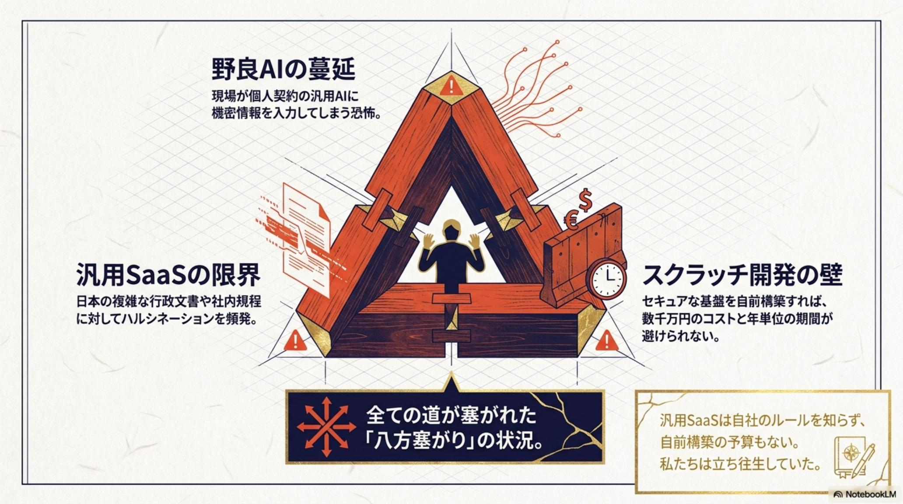
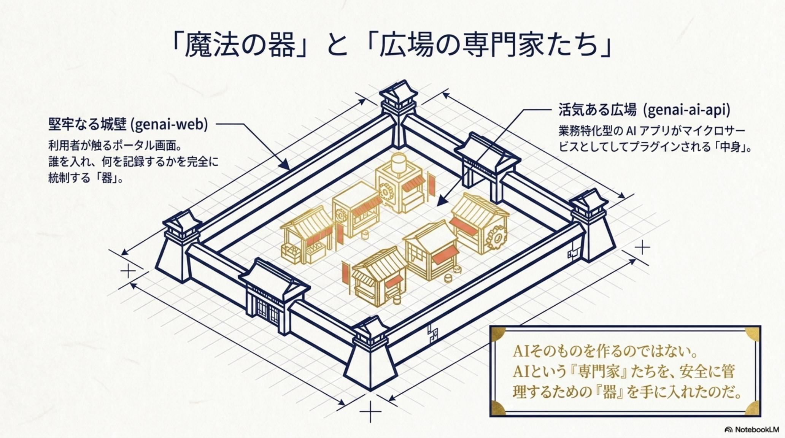
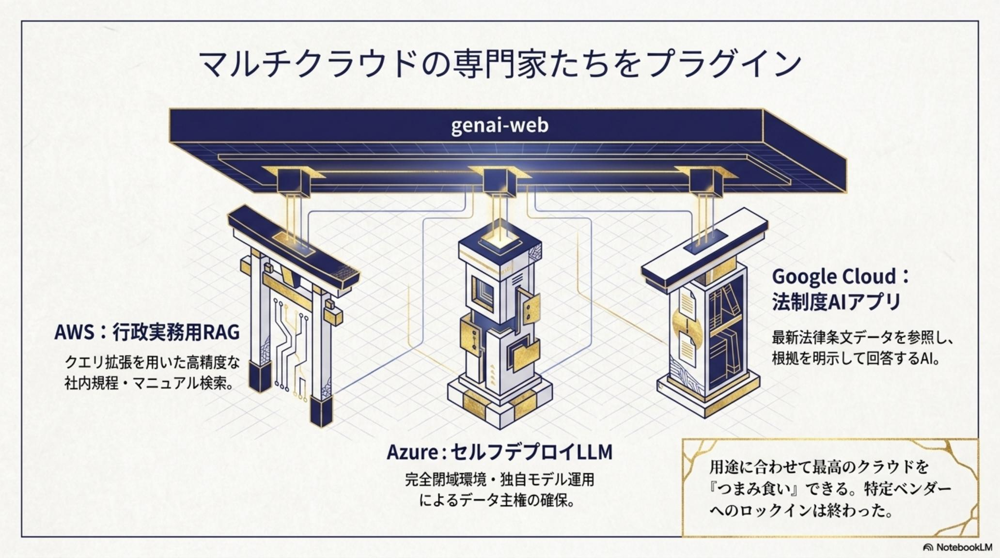
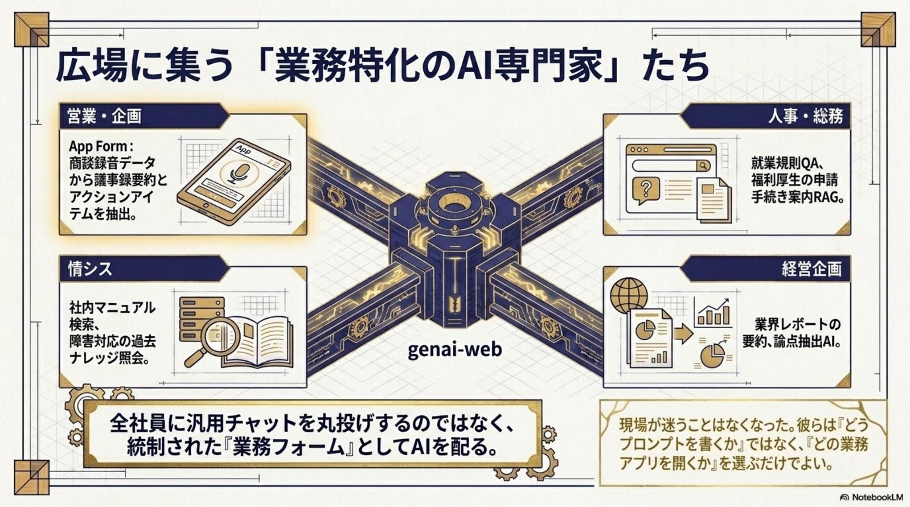
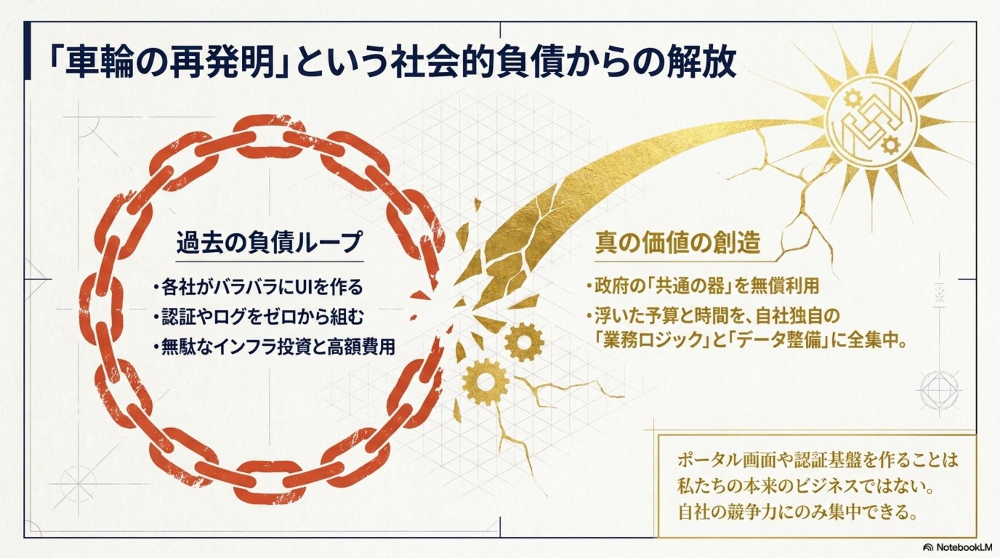
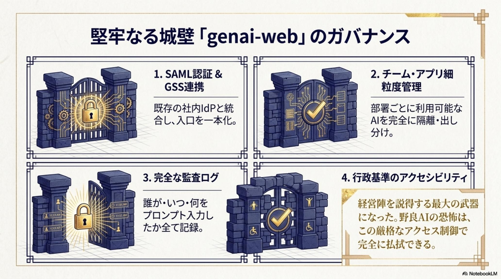
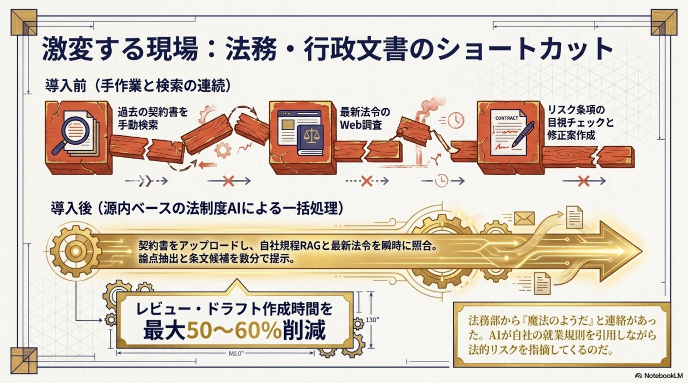

源内 / Gennai
日本のAI主権を取り戻す「魔法の土台」 · 2026-04-24 公開
「野良AI」と「八方塞がり」から、
主権AI基盤へ。
全府省庁 18 万人想定の政府品質ガバナンスを、無償OSSで自社環境に。
SAML/SSO × 監査ログ × 疎結合プラグイン。
2026-04-24、デジタル庁は ガバメントAI「源内（Gennai）」のソースコードを商用利用可能なOSSとして無償公開した。社員が無料の汎用AIに機密情報を流す「野良AI（シャドーAI）」、ハルシネーションで実務に使えない汎用SaaS、自社RAGをゼロから作る数千万〜数億円のロックイン——日本企業の「八方塞がり」を、源内はWebポータルとAI処理層を完全分離する疎結合マイクロサービスで根本から解く。SAML 認証によるSSO、詳細な監査ログ、部署別チーム管理、JSONスキーマだけでAIアプリを差し込める仕組み——AWS/Azure/Google Cloud の専門家AIを着せ替え自由に、ライセンス料ゼロで導入できる「標準インフラ」が、ついに日本のDXに到来した。

情シスを苦しめる「3 つのジレンマ」
中堅企業の情シス担当者は、現場の「AIを使いたい」という熱と、経営の「セキュリティと予算」という冷気の間で板挟みになっていた。「導入を止めれば現場は無断で使う」「許せば情報が漏れる」「自社開発すれば数千万〜数億円とロックイン」——どこを選んでも痛い、AI 導入の八方塞がりがそこにあった。

八方塞がりの三択
- 野良AI（シャドーAI）の蔓延で機密情報が漏れる
- 汎用SaaSは日本の法令・行政文書に弱くハルシネーション多発
- 自社RAG構築は数千万〜数億円＋長期開発
- 特定ベンダーへのロックインは避けられない
- 「車輪の再発明」を全国の企業・自治体が個別に重複
「主権AI基盤」が一気に揃う
- 政府品質のSAML/SSO・監査ログ・RBACを即時導入
- WebとAI層が疎結合でクラウド・モデルを着せ替え自由
- JSON スキーマだけで専用フォームが自動生成
- ライセンス料 ¥0（API利用料とホスティングのみ）
- 非競争領域の開発から解放、業務ロジックに集中
全府省庁18 万人が使う前提で作られた「広場」を、自社環境に
状況： その情シス担当者は、デジタル庁の発表で目を疑った。全府省庁約 18 万人の利用を想定した政府AI基盤のソースが、商用利用可能な OSS として GitHub に公開されたのだ。中身を覗くと、ただのチャット画面ではなかった。それは組織のための「安全な広場（魔法の器）」だった。

digital-go-jp/genai-web：SSO・監査・チーム管理を統合したエンタープライズ級UI結末 — 政府品質ガバナンスが「数日」で自社環境に立ち上がる
源内 Web はSAML 認証によるSSO、詳細な監査ログ、そして「法務部には契約レビューAIだけを見せる」「営業には議事録要約だけ見せる」といった部署別のチーム管理機能を備えていた。情シス担当者がこれを社内に立ち上げた瞬間、社員のAI利用窓口は一本化され、シャドーAIは消滅。「自前で組み上げると半年〜1 年かかる統制機能」が、政府が無償公開した既製の OSSとして、わずか数日で稼働を始めた。

JSON スキーマを書くだけで AI アプリが「広場」に並ぶ
状況： 安全な器（広場）はできた。しかし広場が空っぽでは意味がない。情シス担当者が次に必要としたのは、業務に役立つ専門家AI（中身）だった。源内の真骨頂は、Web ポータルと AI 処理ロジックが完全に切り離された疎結合マイクロサービスにある——その仕組みを、彼は手品のように味方につけた。

digital-go-jp/genai-ai-api：JSON スキーマでアプリ仕様を宣言するだけで、Web 側に専用フォームが自動生成結末 — AWS／Azure／Google Cloud の専門家AIを「着せ替え自由」に並べる
情シス担当者は、AWS の行政実務 RAG、Azure の閉域 LLM、Google Cloud の法制度 AI——3 つのクラウドにある強力な機能をシームレスに源内 Web へプラグインとして追加した。Web 側のコードは 1 行も書き換えていない。JSON スキーマで API 仕様を宣言するだけで、入力フォーム・実行・結果表示が自動生成される。これにより、特定モデル・クラウドへの依存は完全に解消し、AI の中身を業務ごとに着せ替えできる柔軟性を手に入れた。

法務は50〜60% 短縮、営業は議事録から Notion 投稿まで自動
状況： 土台と中身が揃った。あとは「現場が使うか」だけが残された問い。日本語の公用文・法令に最適化された源内のプロンプトは、国産の高額ツール並みの精度を、ライセンス料ゼロで提供する。最初に飛びついたのは、法務・総務と営業・企画だった。

結末 — 会議メモ → 議事録 → Notion／Teams 投稿まで半自動化
営業・企画部は、会議の録音データやメモを源内に投げ込むだけで、議事録の要約・アクションアイテムの抽出・Notion／Teams への自動投稿までが走るアプリを構築した。日本語公用文・法令に最適化されたプロンプトが組み込まれているため、汎用 SaaS では拾えない役職・敬語・社内用語のニュアンスまで一次出力に乗ってくる。ソフトウェアライセンス料は ¥0。発生コストは LLM の API 利用料とホスティング費だけ——「国産高額ツール並みの精度」が、運用費だけで現場に立った。

なぜ源内は「主権AI基盤」として成立するのか
3 つの章を貫く「速さ × 安全 × 自由」の正体は、源内の4 本柱の設計にある。単一クラウドや単一モデルへの依存をシステム的に拒絶しながら、政府品質の統制を外さない——その仕組みを 4 つに分解して解剖する。
Portal 安全な広場
genai-web：SAML/SSO・監査ログ・部署別アクセス制御を内蔵。シャドーAI を物理的に消滅させる「組織の窓口」。
AI-API 中身の差し替え
genai-ai-api：マイクロサービスとして独立稼働。AWS/Azure/Google を自由に並べ、モデル＝資産ではなく交換可能な部品へ。
Schema 自動UI生成
JSON スキーマで API 仕様を宣言するだけで、入力フォーム・実行・結果表示が自動生成。Web 側は 1 行も書き換えなくていい。
Sovereignty 主権の回復
商用利用可OSS。ライセンス料ゼロ × ロックインなし × 出典付き応答。AI を「特定ベンダーから買う」から「自国で運用する」へ。


非競争領域は政府が引き受け、企業は高付加価値に集中する
この企業は、高額な初期開発費を払わず、わずか数週間で自社専用の次世代AIポータルを完成させた。デジタル庁が「源内」を OSS で公開した本当の目的は——日本中の企業・自治体が同じシステムをゼロから個別に作る「車輪の再発明」を終わらせることだった。「インフラ」を委ねた先で、企業は何に向き合うべきか——その境界を 2 列で整理する。
非競争領域（源内に任せる）
- SSO・監査ログ・RBAC など統制機能の共通実装
- マルチクラウド AI を束ねるAPI ゲートウェイ
- JSON スキーマからのUI 自動生成基盤
- 日本語公用文・法令向けの共通プロンプト土台
- OSS としてのセキュリティ更新と長期メンテ
高付加価値領域（自社の差別化）
- 自社固有の業務ロジックとワークフロー
- 独自データの整備・品質管理・RAG 設計
- 顧客・現場との運用ループと改善サイクル
- AI 出力のサンプリング監査と説明責任
- 長期的なAIガバナンスと人材育成
源内が終わらせるのは「車輪の再発明」だ——日本企業は AI を「作る」側から、自社の業務で「使いこなす」側へ移れる。— デジタル庁 OSS 公開、2026-04-24 の意味